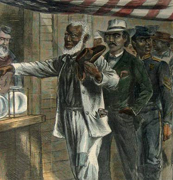
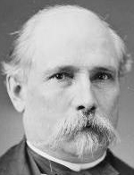
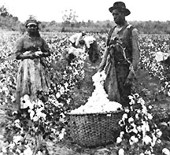

|
Andrew Johnson's impeachment left the Republican party hopelessly divided. In
hopes of recovering from the damage that had been done, the Republicans
convinced Ulysses S. Grant to accept their presidential nomination in 1868.
Thanks to his immense popularity as the general who had won the Civil War, he
won handily. By the time he was inaugurated, all but three Southern states had
been reconstructed, and all of the reconstructed states sent representatives to
Congress. Technically speaking, by 1868 Reconstruction was essentially
completed, since the Reconstruction Act of 1867 had dealt only with readmission
of states and formation of new governments. But the fate of Reconstruction was
not to be decided until these newly elected Republican governments demonstrated
their ability to govern and to change the fabric of Southern life. And they were
going to have to go it alone, for most Congressional Republicans were still
moderates who considered their job done. They thought of Reconstruction as a
limited political issue to be solved by political means. Since Republicans had
been elected to lead state governments, the political goals had been achieved,
and now it was up to those governments to finish the job.
The Challenges Facing Southern Republicans
It was perhaps not realistic to expect the Republican governments of the
Southern states to achieve the goals of Reconstruction alone, for they faced
several obstacles. First, the Republican governments did not have really have
|

"The First Vote", published in 1867, takes a positive stance
on black voting; showing representatives from the key sources of African
American leadership; an artisan carrying his tools, a well dressed city-dweller,
and a soldier.
|
the power to make permanent changes in Southern life. Their hold on power was
tenuous at best, and even in the best of circumstances it is difficult for
governments to render significant social, economic and political change in so
short a period of time. Another issue was that the Republican coalition had been
elected by black votes. This had given all Republican governments an aura of
radicalism that white Southerners could not accept. This problem was compounded
by the fact that Republican governments elected in the South had depended on
military rule. Taking away the guns took a away the power of the Southern
Republicans to get reelected. Finally, and perhaps most significant, the
Republicans in the South were an extremely diverse and antagonistic lot, and the
coalition they formed was tenuous at best.
There were three parts of the Republican coalition in the South. The
Carpetbaggers were Northerners who either moved South or remained in the South
after the war, sometimes for humanitarian reasons and sometimes because they saw
it as an area of great opportunity. They were only 16% of the Republicans in the
South, but they dominated Republican politics in the region. They depended on
black constituencies, and as such were big proponents of civil rights,
education, and social services. This meant that they had to be big proponents of
tax increases, as well.
African Americans were the second group of Southern Republican voters. They
were the large majority of the party, but they did not hold office very often
because whites tended to seize offices for themselves, and also because they
were hesitant to identify themselves too heavily with the party that Southern
whites hated. Some did gain office, though; there were fourteen African
Americans in the House of Representatives, two Senators, and several lieutenant
governors. Nonetheless, blacks were very under-represented, especially on the
local level.
The third segment of the Republican coalition was the scalawags. These were
the native whites who chose the Republican party as their political vehicle
after the war. They were the pivotal members of the coalition, for the survival
of the party in the South depended on the ability of these individuals to
convert their fellow white Southerners. The problem was that the scalawags were
themselves a diverse group; some were former Whigs who joined just because they
hated the Democrats, some were former Democrats who resented the Confederacy for
seceding and provoking a war, and some were dissenters who wanted reform. The
Republicans tried to appeal to all of these groups, but since they had such
different interests, this meant that the Republican identity in the South was
ambiguous and unfocused.
The Record of the Southern Republicans
Because of the divisive nature of the Republican coalition, as well as the
other impediments that Republican state governments faced, the party had a mixed
record in the South, which can be evaluated by looking at their achievements and
failures in terms of four issues that heavily affected the reconstructed South.
First, a public education system was set up in every state, which was a major
achievement because before the war no Southern state except North Carolina had a
public education system. However, school was often in session only four or five
|

James Alcorn
|
months a year, schools were underfunded, many children attended irregularly or
not at all and many teachers were poor. The bottom line, however, was that the
foundations for public education had been established, and by 1900 black
literacy had climbed above 50%
Second, Civil Rights protection was legislated at this time and
discrimination was outlawed. Laws designed to force African Americans into an
inferior position were overturned. The Civil Rights Act of 1866 had required
that states treat blacks equally under the law, this was followed by
anti-discrimination policies passed by Republican state governments. Republicans
made an effort to employ blacks in police and fire departments as well as in
government jobs. Of course, these things did nothing to end de facto
discrimination and racism. Further, many Republican leaders were unwilling to
end legal forms of racism, such as segregation. Sometimes their hesitance was
due to their own racial agenda. This was the case with men like Governor James
Alcorn of Mississippi, who held two inaugural receptions, one for whites and one
for blacks. More often, their hesitance was due to fear of jeopardizing all the
gains that had been made. Nonetheless, the Civil Rights Act and the fourteenth
and fifteenth amendments make it impossible to label Reconstruction a failure in
terms of race relations, particularly compared to what happened to African
Americans after Reconstruction was over.
A third concern for Southern Republican governments was internal
improvements. This was the issue about which the Republicans were most
confident, because they could reasonably expect white Southern support.
Railroads were seen as the key element in rebuilding the Southern economy, it
was felt that they would usher in the "New South", a South with a modern,
industrialized economy. Republicans saw this as a key to gaining white support,
every community revitalized by the railroad would be indebted to the party. The
problem was that Republicans staked their future too heavily on the railroads,
and when the railroads ran into problems, so did the Republicans. The railroads
were often poorly planned or poorly executed. Contracts were granted to corrupt
corporations, sometimes in violation of state law. Further, the Republicans were
often thwarted by their political opponents. Things got particularly bad after a
downswing in the economy caused by the Panic of 1873. So while the Republicans
had the highest hopes for their internal improvement programs, it turned out to
be the area where they achieved the least. By the time Reconstruction ended,
only 7,000 miles of new railroad track had been laid in the South.
The final concern on which Southern Republicans focused was land and labor
|

Sharecroppers
|
policy. Republican achievements in this area were also disappointing. With the
exception of creating the South Carolina land commission in 1868, nothing was
ever done to grant land to the freedmen, and the issue disappeared from the
public discourse. As such, virtually all blacks were forced to work as laborers
during Reconstruction. The Republicans set up a lien system in order to protect
laborers. This system evolved into sharecropping, which trapped African
Americans in a slavery-like situation.
So, while Southern Republican governments accomplished some of their goals,
their successes were definitely limited. Further, the Republicans failed in
their larger goal of establishing a unified, politically viable coalition in the
region. The era of Reconstruction left most whites resenting the Republicans,
more than anything else, which laid the groundwork for the "Redemption" of the
South by white Democratic politicians.
Source: Christopher Bates for the History 139A website
|